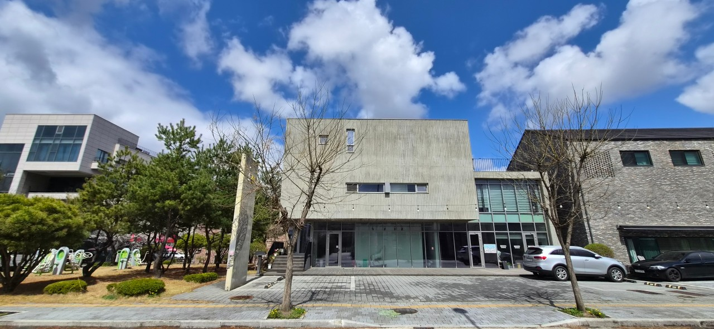
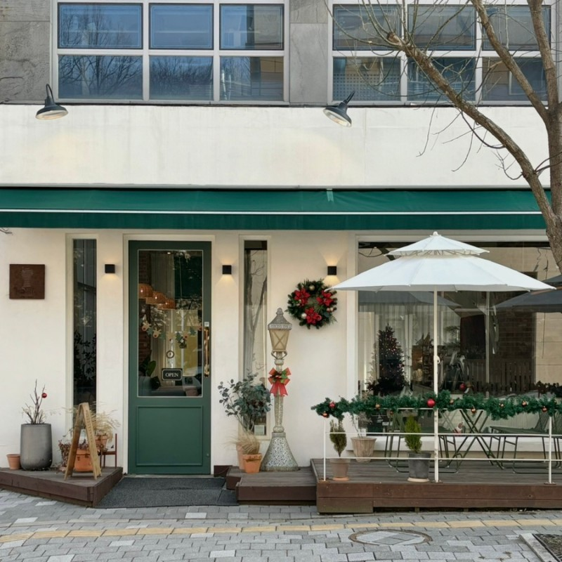
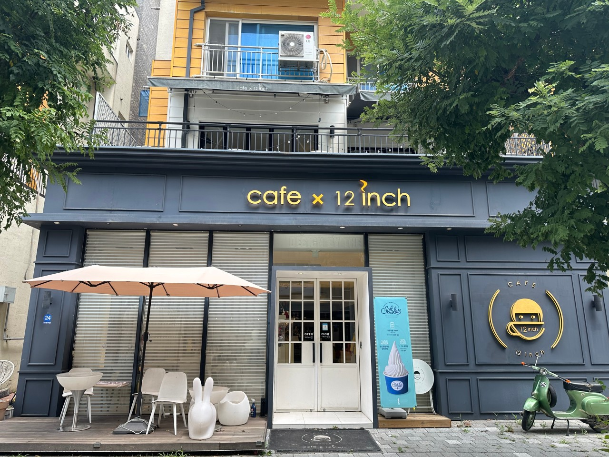
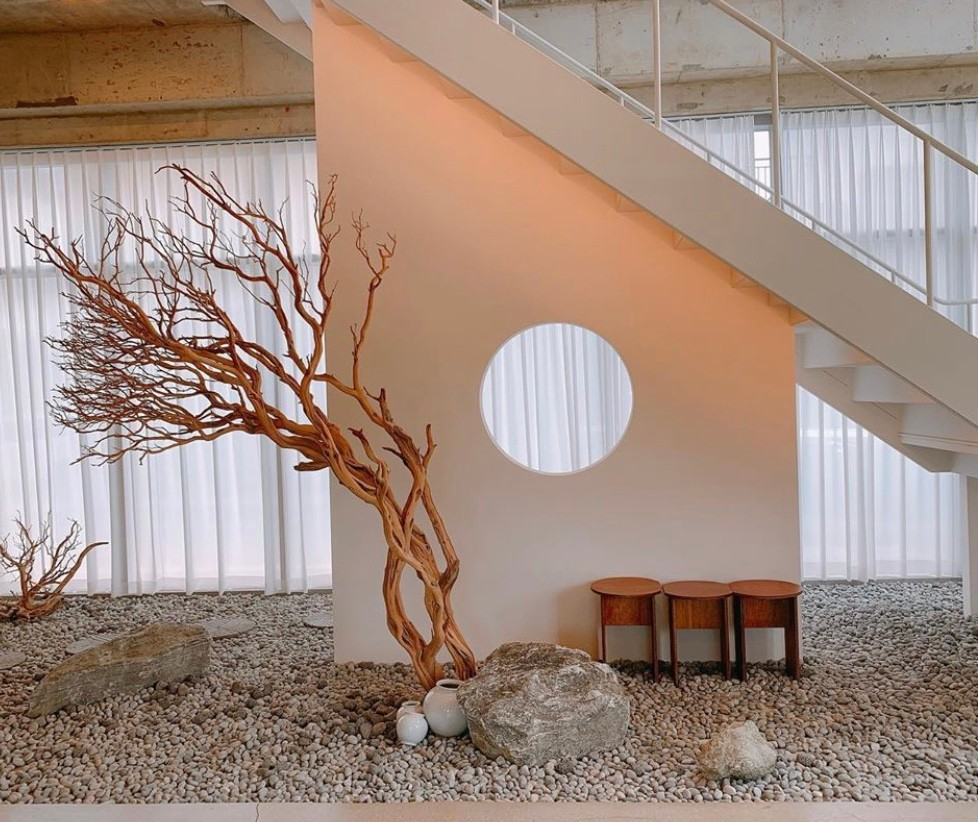
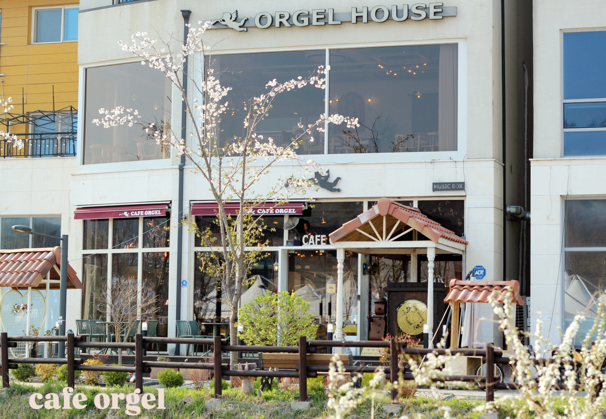

갤러리 SO (Gallery SO)
예스파크 예술마을 중심에서 서양화가 인순옥 배추작가의 작품 세계와 고요한 체류를 함께 누리는 감성 복합공간

공방 골목길은 차량 진입이 적어 보행 감상에 최적화되어 있습니다.
전시와 쉼이 자연스럽게 이어지는 곳
예스파크의 중심가 골목에 자리 잡은 갤러리 SO는 서양화가 인순옥 작가의 독창적인 예술 철학과 고요한 건축 미학이 응축된 복합 문화 아카이브입니다. 거친 텍스처의 노출 콘크리트와 단정한 벽돌로 마감된 외관은 사계절 이천의 하늘빛과 어우러져 단아한 풍경을 완성합니다.
1층 상설 갤러리는 우리 땅에서 자라는 배추를 모티프로 생명력과 소박한 한국미를 노래하는 서양화가 인순옥 배추작가의 원화 작품을 조용히 음미할 수 있는 열린 전시장입니다. 붓터치의 농담과 깊이 있는 색채감이 갤러리 가득 채광과 함께 스며들어, 바쁜 일상 속에서 지친 감각을 부드럽게 일깨웁니다.
"당일치기 코스로 예스파크를 방문했을 때, 공방 투어와 카페 탐방 사이 가벼운 발걸음으로 들르기 가장 좋은 휴식처입니다. 화려한 상업 시설 대신 조용히 그림을 마주하고, 통창 너머로 흔들리는 초록 가로수를 바라보며 잠시 머물다 가세요. 머무름의 가치를 느끼고 싶다면 스테이 연계도 훌륭한 선택지입니다."
자연의 순환과 강인한 생명력을 담은 서양화 원화 컬렉션을 한눈에 감상.
계절마다 다르게 물드는 가로수와 예스파크 마을 전경을 담아내는 커다란 통창.
"도자기를 굽는 가마 굴뚝 사이, 갤러리 SO의 차분한 회색조 벽돌은 온전히 쉼에 집중할 수 있는 쉼표가 되어줍니다."
- 2024 현장 큐레이션 기록 중함께 묶어가기 좋은 예스파크 감성 카페

도보 3분감각적인 프렌치 파티세리와 유럽풍 테라스, 갓 구운 바게트 향이 가득한 베이커리.

도보 4분정교한 피규어 컬렉션과 아날로그 LP 음악이 흐르는 감각적인 서브컬처 라운지.

도보 5분이천 도자기의 정취를 재해석한 옹기 티라미수와 정갈한 한국식 브루잉 티 공간.

도보 6분맑고 청아한 오르골 소리를 들으며 수제 청 음료를 즐기는 낭만적인 힐링 스팟.